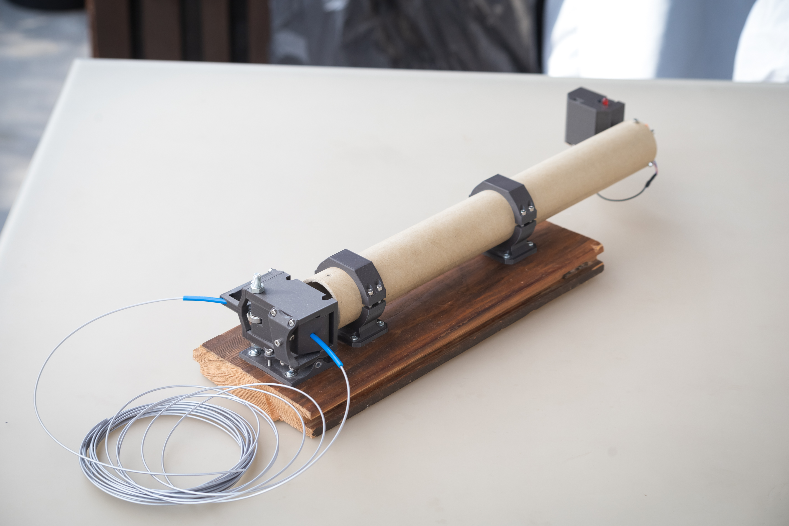

TWIN-JET
Motorówka RC napędzana turbinami strumieniowymi 
Co to jest i dlaczego?
W 2019 podszedł do mnie znajomy, który zajmował się robieniem swoich własnych filamentów do drukarek (jako projekt badawczy na uczelni). Potrzebował urządzenia do pomiaru, jak dobrze mu te filamenty wychodzą jeśli chodzi o jednostajną grubość. Uznałem że nie powinno to być trudne i zgodziłem się spróbować mu coś takiego zmontować. Wtedy jeszcze nie wiedziałem, że zrealizowanie tego zadania zajmie mi ponad 4 lata.
Założenia projektowe:
- Filament jest przeciągany przez urządzenie, które na podstawie pomiarów tworzy wykres jego średnicy
- Niepewność pomiaru w okolicach 0.1mm (jest to sprawa niejednoznaczna, ale o tym później)
- Obsługa filamentów 1.75mm (mniej więcej, filamenty DIY się bardzo wachają, o tym też później)
- Możliwość zapisu danych prosto na komputer lub na kartę sd
- Niski koszt
- Prosta i intuicyjna obsługa
Co w tym trudnego? Podobne urządzenia są wykożystywane w przemyśle i mają bardzo dobrą precyzję. Nie udało mi się jednak znaleźć żadnych komponentów, czy gotowych urządzeń, będących w stanie zapewnić wymaganą precyzję na hobbistycznym rynku. To co mnie głównie ograniczało, to brak możliwości wykonywania precyzyjnych części czy mechanizmów, jako że nie miałem warsztatu czy nawet drukarki 3D. Co było dalej?
Wersja 1a 02.2019
Pierwsza wersja urządzenia miała bardzo prostą zasadę działania. Dioda laserowa oświetla filament, a po jego drugiej stronie znajduje się fotoresystor, który jest zacieniany. Na podstawie ilości światła docierającej do fotorezystora określamy grubość filamentu.
Nie działało to za bardzo, bo fotorezystor ani żaden inny sensor który testowałem, nie był czuły na całej swojej powieszchni, przez co nie dało się przełożyć jego odczytu na wielkość cienia na niego padającego.